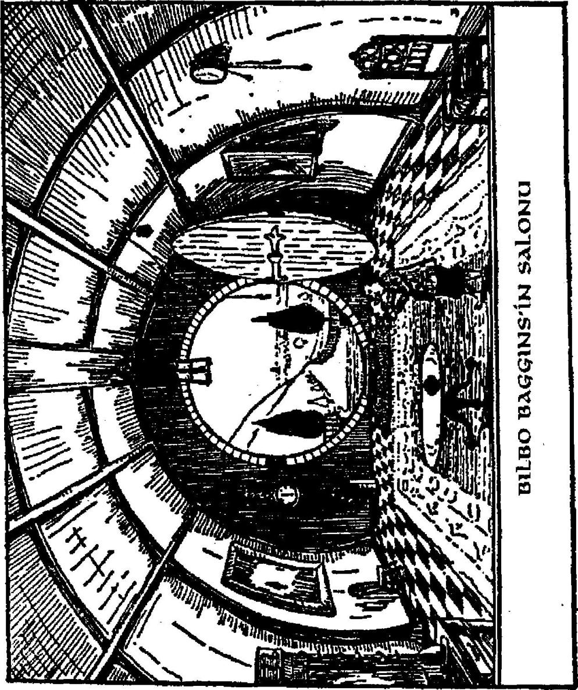

321
asılmış kırmızı siyah, koca bir duyuru, Haziranın Yirmiikisinde Grubb Beyefendiler, Grubb ve Burrowes'ın Hobbitya, Tepealtı, Bag-Yaka'dan Merhum Bilbo Baggins Cenaplarının Eşyalarını açık arttırmayla satacağını söylüyordu. Satış tam saat onda başlayacaktı. Şimdi nerdeyse öğle yemeği vaktiydi eşyalann çoğu nerdeyse yok pahasından eski şarkılara (bu açık arttırmalarda bayağı olağandı) dek değişik fiyatlarla satılmıştı. İşin aslı Bilbo'nun kuzenleri Sackville-Bagginsler, kendi eşyalarının buraya sığıp sığmayacağını öğrenmek için odalarını ölçüp biçiyorlardı. Kısacası Bilbo 'Olası Ölü'ydü ve bunu söyleyenler arasında bu olasılığın doğru olmamasına üzüldüğünü söyleyen çıkmadı.
Bay Bilbo Baggİns'in dönüşü, Tepe'nin üstünde ve Tepe'nin altında ve Su'yun öte tarafında epey çalkantı yarattı. Bu dokuz günlük mucizeyi de aşıyordu. Resmi sıkıntıysa gerçekte yıllar sürdü. Bay Baggİns'in yaşadığının kabul edilmesi uzun zaman aldı. Özellikle de Saüş'ta iyi alışveriş yapmış olanlan ikna etmek zor oldu; ve sonunda zaman kazanmak için Bilbo kendi eşyasının çoğunu geri satın almak zorunda kaldı. Gümüş kaşıklannın çoğu akıl almaz bir şekilde ortadan kayboldu ve nasıl olduğu açıklanamadı. Bilbo kendi adına Sackville-Bagginsler'den şüphelendi. Onlarsa, geri dönen Baggİns'in gerçek olduğunu asla kabullenmediler ve ondan sonra da Bilbo'yla ilişkileri arkadaşlık sınırlan dışında kaldı. Gerçekten de onun nefis hobbit-kovuğunda yaşamayı çok istemişlerdi.
Gerçekte Bilbo kaşıklarından çok daha fazla şey kaybettiğinin farkına vardı - saygınlığım kaybetmişti.
Ondan sonra hep bir elf-dostu olarak kaldığı ve cücelerin, büyücülerin ve o tarafa yolu düşen bu türden halkın saygısını kazandığı doğruydu; ancak artık pek saygıdeğer değildi. İşin aslı yöredeki tüm hobbitler tarafından 'kaçık'
olarak nitelendirildi - Took tarafından kuzenler ve 322

yeğenleri dışında, ki onların arkadaşlığı da yaşlılar tarafından hoş karşılanmıyordu.
Onun buna aldırmadığını söylemekten üzüntü duyuyorum. Halinden oldukça hoşnuttu; ve şöminenin üzerindeki çaydanlığının sesi Beklenmedik Partinin öncesindeki sessiz günlerde olduğundan çok, çok daha ahenkliydi. Kılıcını şömine rafının üzerine astı. Zırh örtüsü salonda bir askıya oturtulmuştu (bir müzeye verene dek).